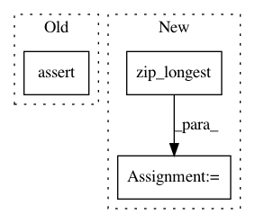

46acaf0bdba163c1d3d6187b025805fccbbf6e71,tests/utils_tests/iterator_tests/test_apply_prediction_to_iterator.py,TestApplyDetectionLink,test_apply_prediction_to_iterator,#TestApplyDetectionLink#,18
Before Change
self.assertEqual(len(gt_values), len(dataset_gt_values))
for gt_vals, dataset_gt_vals in zip(gt_values, dataset_gt_values):
self.assertEqual(list(gt_vals), dataset_gt_vals)
testing.run_module(__name__, __file__)
After Change
self.assertEqual(len(list(vals)), len(dataset_imgs))
for vals, dataset_vals in zip_longest(gt_values, dataset_gt_values):
for val, dataset_val in zip_longest(vals, dataset_vals):
if isinstance(dataset_val, np.ndarray):
np.testing.assert_equal(val, dataset_val)
else:
self.assertEqual(val, dataset_val)
testing.run_module(__name__, __file__)
In pattern: SUPERPATTERN
Frequency: 3
Non-data size: 3
Instances
Project Name: chainer/chainercv
Commit Name: 46acaf0bdba163c1d3d6187b025805fccbbf6e71
Time: 2017-05-30
Author: Hakuyume@users.noreply.github.com
File Name: tests/utils_tests/iterator_tests/test_apply_prediction_to_iterator.py
Class Name: TestApplyDetectionLink
Method Name: test_apply_prediction_to_iterator
Project Name: chainer/chainercv
Commit Name: 448da20bea8ee1245f96f8c5a6122fc039f03d86
Time: 2017-05-31
Author: Hakuyume@users.noreply.github.com
File Name: tests/utils_tests/iterator_tests/test_apply_prediction_to_iterator.py
Class Name: TestApplyDetectionLink
Method Name: test_apply_prediction_to_iterator
Project Name: lingpy/lingpy
Commit Name: db8c78987fa2dbd7fabbb8f57775a2f500fe7612
Time: 2014-12-16
Author: xrotwang@googlemail.com
File Name: lingpy/algorithm/distance.py
Class Name:
Method Name: hamming